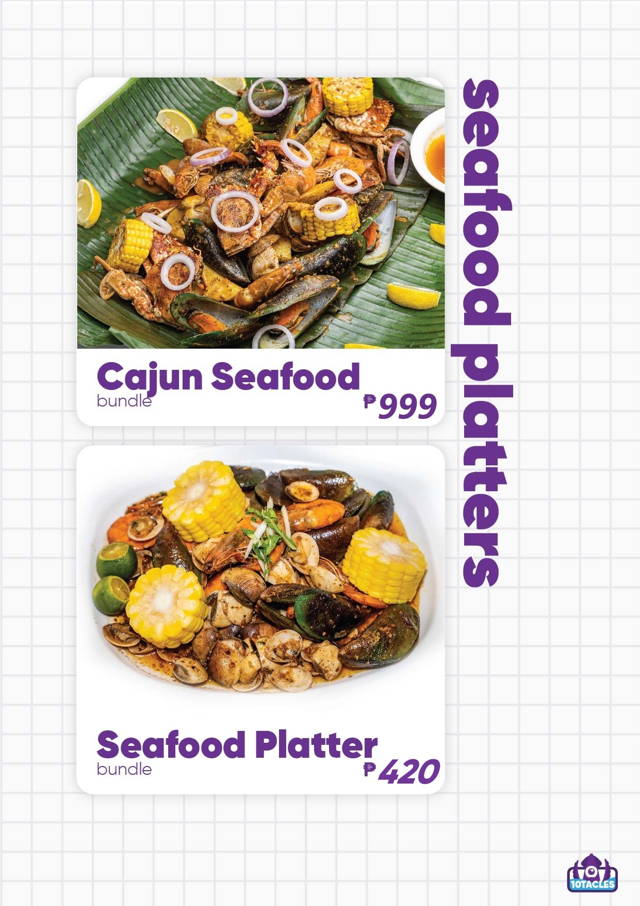

OUR KITCHEN. YOUR TABLE.
✦ SEAFOOD LOVERS, THIS ONE'S FOR YOUA little feast.
A little feast.
A lot of sarap.
Your 10Tacles favorites, delivered by our own riders.
Order direct. More seafood, more happy moments.
✳ Cooked after payment approval⌖ Tanza delivery demo

FROM OUR KITCHEN
Bring everyone to the table.✳
Bring everyone to the table.✳
GOOD FOOD
10
GOOD COMPANY
10
GOOD COMPANY
Let's see if we're in your neighborhood.
Choose a test area to preview coverage and delivery fees.
A SIMPLE WAY TO ORDER DIRECTFrom our stove
From our stove
to your doorstep.
01
Pick your feast
Choose a test area, fill your bag, and see the full total.
02
Pay, then we prepare
Staff verifies your payment before your order reaches the kitchen.
03
Our rider brings it over
Follow delivery updates from pickup to your doorstep.